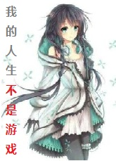

我的人生不是你的游戏
精锐游击剑士

简介
我生活在这里，这里是我的祖国，我的故乡，我的家园。 我生活在这里，这里有我的亲人，我的朋友，我的爱人。 我生活在这里，这里有我的理想，我的拼搏，我的血，我的一切…… 现在你告诉我，这个世界是个游戏？ 我也是游戏里的人？还是你建的游戏角色？ 那你肯定是游戏穿越了~\(≧▽≦)/~
打开原始网站
序章——不需要英雄的世界
（1）第一次出现
（2）我说的是这种变身
（3）原始人游未来
（4）让故事开始吧
（5）陌生的拜访者
（7）跑偏的聊天
（8）落后的人
（9）这周好忙~没时间更新啦~对不起~
（10）库雅的真正身份是？
（1） 战端开启
（2） 新兵登记
（3） 邓加尔的新兵生活
（4） 转变如此容易
（5） 菜鸟抵达
（6） 袭击与胁迫
（7） 联邦的反击
（8） 兵不知将
（9） 后方修整
（10）被动树敌
（11）奇怪的突发事件
（12）军中水更深，我要回农村
（13）大战将至
（14）貌似……打完了？
（15）坑字写在脸上
（16）铁狼之盾
（17）全场最佳弗比斯
（18）圣与血与国家
（19）拿去吧！女主角！
（20）有人想走，有人想留
（21）意料之内的波折
（22）寻死觅活
（23）降临者的历史
（24）机遇降临
（25）战争结束
（26）不适应生活
（27）起点是安泽尔姆
（28）什么都要准备
（29）奇妙的阿萝小姐
（30）邓加尔的又一个人生目标
（31）带着‘女朋友’逛街？
（32）阿萝的好奇心
（33）多好的一对啊~是吧？
（34）知识上锁的时代
（35）继续阿萝小姐的专场
（36）启程回家
（37）在路上
（38）谁要的在路下？
（39）所以上车需谨慎
（40）老司机翻车
（41）……我发财了？
（42）很有趣的两个人
（43）精神病人发作了
（44）大门之问
（45）大门之答
（46）怪不能乱开
（47）越级挑战？做梦呢！
（48）来自老乡的录音
（49）老乡的信
（50）终于建好人物的少女
（51）来~叫猎爹！
（52）这笔交易要不得
（53）深藏功与名
（54）牛车司机不要照
（55）假如老师能升级
（56）回到家乡
（57）快到家了
（58）逛街一天
（59）认真努力的阿萝老湿
（60）多好的市民会馆啊
（61）多好的公共设施啊
（62）怎么就被袭击了呢？
（63）一个被捅一个挨抽
（64）鉴定一下血统
（65）到家休息
（66）想要凑一对的举手
（67）简单的二选一
（68）天大的误会
（69）狩猎训练
（70）今天开始学玄学
（71）准备再次启程
（72）小天使阿萝
（73）准备办学
（74）阿萝工程
（75）不平静的出门
（76）上船走人
（77）抵达维尔纽斯
（78）我回来了！
（79）考试结束
（80）人前人后
（81）还让不让人睡觉了！
（82）入夜
（83）又碾过了无聊的东西
（84）这只是开始
（85）终于回归
（86）邓加尔今晚留下来
（87）入校见闻（一）
（88）入校见闻（二）
（89）入校见闻（三）
（90）入校见闻（四）
（91）入校见闻（完）
（92）失败的登场
（93）交个朋友
（94）一年前的大事件
（95）不再一样的学院
（96）学长的故事
（97）东方史闻
（98）东方史闻·补
（99）阿萝小姐的牢骚
（100）已经入戏的阿萝老师
（101）阿萝的两面
（102）阿萝主线开始
（103）谜一样的阿萝小姐
（104）听太太说
（105）阿萝小姐思考中
（106）教导新人的阿萝小姐
（107）人气很高的阿萝老师
（108）行动的阿萝小姐
（109）太太的外援
（110）厉害了！我的叔！
（111）河谷人祸（一）
（112）河谷人祸（二）
（113）河谷人祸（三）
（114）河谷人祸（四）
（115）河谷人祸（五）
（116）河谷人祸（六）
（117）河谷人祸（完）
（118）邓加尔的校园生活没有问题
（119）和学姐逛街就聊这个？
（120）邓加尔主线开始
（121）两年后的我
（122）两年后的你
（123）邓加尔的疏忽
（124）天使的启示
（125）不同的情景
快过年了~更新会不稳定
（126）预热一下
（127）赌约
（128）邓加尔十分自信
（129）窝控制不住自己啊！
（130）这是本好书啊！
（131）吃饭吃出来的麻烦
（132）对邓加尔专用良药
（133）邓加尔出笼
（134）这是轮椅组合
（135）检查
（136）把猎犬放入猎场
（137）狗拿耗子……
（138）我从阴影中降临
（139）猎人道途
（140）救援抵达
（141）第一次配合
（142）风波结束
（143）事后探望
（144）第二学年开始
（145）偷渡的阿萝小姐
（146）唯一的朋友
（147）愉快的回家
（148）苏尔太太的嘱咐
（149）一封信引起的风波
（150）阿萝小姐的决断
（151）工头邓加尔
（152）好消息！好消息！
（153）海啸袭来
请假一天~
（154）遥远的国事
（155）你们点的便当
（156）连锁反应
（157）两窝坏鸟
（158）虔诚的恩赐
（159）怪物攻城
（160）即将开始的怪物攻城战
（161）阿萝小姐智商下线
（162）躲不过的劫难
（163）迟滞失败
（164）开战之前奶倒了！
（165）中计了
（166）老师相信你
（167）失败了吗？
（168）急转直下
（169）大灾小难
（170）救命小药？
（171）组织收尾
（172）家母有难
（173）家族绝学
（174）城里乱糟糟
（175）血统的意外价值
（176）G!G!G！
（177）经验宝宝的悠闲生活
（178）领地攻略
（179）准备结束
（180）旧城攻略战（上）
（181）旧城攻略战（中）
（182）旧城攻略战（下）
（183）队友是你最大的敌人（上）
（184）队友是你最大的敌人（中）
（185）队友是你最大的敌人（下）
请假一天~
（186）红与黑
（187）收尾工作
（188）邓加尔的困境
（189）故乡之缘
（190）阿萝小姐职业成型
（191）突然变咸
读者告知~
（192）喝大了的阿萝小姐
（193）一起走入学院
（194）对阿萝的小结
（195）他们留下的痕迹
（196）少年邓加尔的烦恼
（197）系统的，我的……
（198）阿萝！Booooom！
（199）邓加尔！Booooom！
（200）那么告一段落~
（201）为美好的世界献上方便面
（202）邓加尔股市走高
（203）无所适从的高人气生活
（204）异世界怎么可能没有武斗会
（205）远方的一场大战
（206）大时代的背景
（207）好想为美好的世界献上大宝贝
（208）一半血缘（一）
（209）一半血缘（二）
（210）一半血缘（三）
（211）为美好的世界献上大新闻（上）
（212）为美好的世界献上大新闻（下）
（213）书里有坑
（214）他乡骨（一）
（215）他乡骨（二）
（216）他乡骨（三）
（217）他乡骨·三月雨
（218）他乡骨·笑醉狂
（219）无害的阿萝小姐
（220）诡异的测试
（221）筛选合格
（222）邓加尔的机遇
（223）阿萝小姐的梦想
（224）艾玛努尔国崩进行时
（225）想安稳的上一学期课是不可能的
（226）起点是永夏港
（227）安顿与休息
（228）好孩子不会胡乱搞事~
（229）悠闲的待命
（230）邓加尔的表演（一）
（231）邓加尔的表演（二）
（232）邓加尔的表演（三）
（233）邓加尔的表演（四）
（234）邓加尔的表演（五）
（235）加尔的表演（六）
（236）邓加尔的表演（完）
（237）终于继续的任务
（238）苟精灵的船
（239）突兀的袭击
（240）枯骨海盗
（241）海盗退却
（242）龙骧的新锐战舰
（243）精灵种的十字路口
（244）强国的压迫感
（245）阿萝的新课
（246）阿萝老师继续开课
（247）终于抵达了目的地
（248）初见龙骧军
推荐一本书《宁溪笔谈》
（249）考察团的工作
（250）龙骧影鳞
（251）打的不亏
（252）龙骧帝国的作风
（253）阿萝被人注意了
（254）目标真的是邓加尔吗？
（255）决斗之前
（ 256）非洲战神邓加尔
（257）此事揭过
（258）决斗之后的事情
（259）并非是天使
（260）阿萝小姐被恶心到了
（261）阿萝升官
（262）不和谐的队伍
（263）预谋已久的袭击
（264）正义必将得到伸张
（265）本性的凶狠
（266）冷酷的猎人
（267）阿萝‘大小姐’
（268）又一次分开的二人
（269）邓加尔的救援
（270）抓萝
（271）萝奔！
（272）萝跑了
（273）阿萝逃出生天
（274）抱住
（275）说龙
（276）报应与报应与‘报应’
（277）阿萝再次升官
（278）两年的重量
（279）一年的成长
(280)这个世界的孩子们
（281）不讲道理的世界
（282）江溟的指点
（283）阿萝老师的优柔寡断（附假条）
（284）愚蠢的魔女
（285）夺魂者之灾（一）
（286）夺魂者之灾（二）
（287）夺魂者之灾（三）
（288）夺魂者之灾（四）
（289）夺魂者之灾（五）
(290)夺魂者之灾（六）
(291)夺魂者之灾（终）
（292）最危险的火种
（293）心神不宁
（294）魔女和她的随从
（295）诡异而又和谐的相处
（296）魔女和她的随从（下）
（297）寇麦克的故事
（298）追寻过去的痕迹
（299）降临……降临！
（300）禁忌的历史
（301）坦白从宽的阿萝小姐
（302）降临与背叛（一）
（303）降临与背叛（二）
（304）降临与背叛（三）
（305）降临与背叛（四）
（306）降临与背叛（完）
（307）外面的等待者
（308）灰烬的测试
请假条~
关于这段时间更新无力的原因~
（310）灰与枯骨（上）